VANE PUMP > REASSEMBLY |
| 1. INSTALL VANE PUMP HOUSING OIL SEAL |
Coat the lip of a new oil seal with MP grease.
| 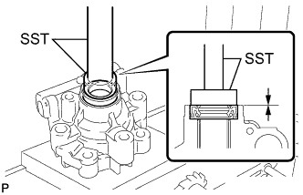 |
Using SST and a press, press in the oil seal.
| 2. INSTALL VANE PUMP SHAFT WITH VANE PUMP PULLEY |
Coat the inside surface of the bushing in the vane pump front housing with power steering fluid.
| 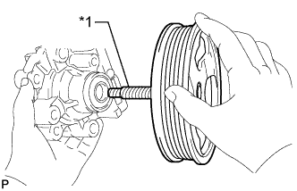 |
Gradually insert the vane pump shaft with vane pump pulley.
| *1 | Protective Tape |
| 3. INSTALL VANE PUMP FRONT SIDE PLATE |
| 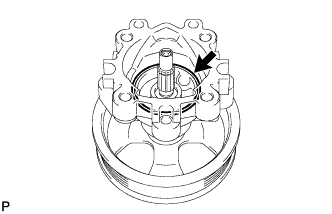 |
Coat a new O-ring with power steering fluid and install it to the vane pump front housing.
| 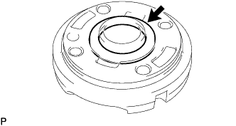 |
Coat a new O-ring with power steering fluid and install it to the front side plate.
| 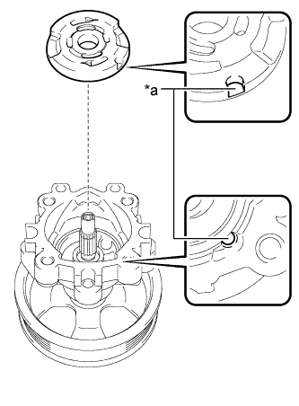 |
Align the notch of the front side plate with the notch of the vane pump front housing and install the front side plate.
| *a | Align |
| 4. INSTALL VANE PUMP CAM RING |
| 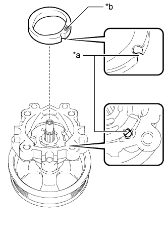 |
Align the notch of the cam ring with the notch of the front side plate and install the cam ring with the inscribed mark facing upward.
| *a | Align |
| *b | Inscribed Mark |
| 5. INSTALL VANE PUMP ROTOR |
| 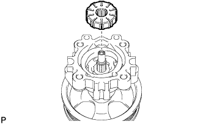 |
Install the vane pump rotor.
Coat the 10 vane pump plates with power steering fluid.
| 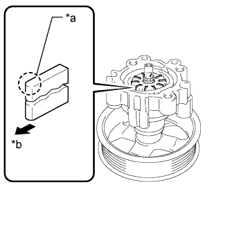 |
Install the vane pump plates with the round end facing outward.
| *a | Round End |
| *b | Outward |
| 6. INSTALL VANE PUMP SHAFT SNAP RING |
Using a screwdriver and snap ring expander, install a new shaft snap ring to the vane pump shaft.
| 7. INSTALL VANE PUMP REAR HOUSING |
| 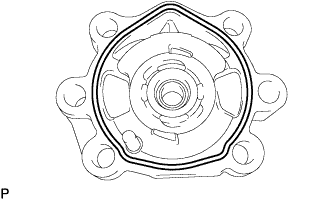 |
Coat a new O-ring with power steering fluid and install it to the rear housing.
| 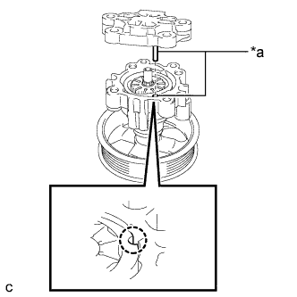 |
Align the straight pin of the rear housing with the notches of the cam ring, front side plate and vane pump front housing.
| *a | Align |
Install the rear housing with the 4 bolts.
| 8. SECURE VANE PUMP ASSEMBLY |
 |
Using SST, secure the vane pump in a vise.
| 9. INSTALL PUMP REAR BRACKET |
Install the bracket with the bolt.
| 10. INSTALL PRESSURE PORT UNION |
Coat a new O-ring with power steering fluid and install it to the pressure port union.
Install the pressure port union.
| 11. INSTALL PRESSURE FEED TUBE |
Install 2 new gaskets to the pressure feed tube.
Install the pressure feed tube.
| 12. INSPECT TOTAL PRELOAD |
Check that the pump rotates smoothly without abnormal noise.
Temporarily install a service bolt.
| Item | Value |
| Thread diameter | 10 mm (0.394 in.) |
| Thread pitch | 1.25 mm (0.0492 in.) |
| Bolt length | 50 mm (1.97 in.) |
| 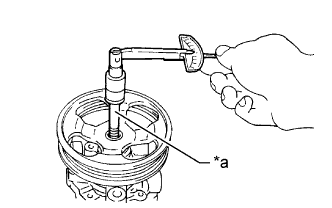 |
Using a torque wrench, measure the pump rotating torque.
| *a | Service Bolt |
| 13. INSTALL SUCTION PORT UNION |
Coat a new O-ring with power steering fluid and install it to the suction port union.
Install the suction port union to the vane pump with the bolt.